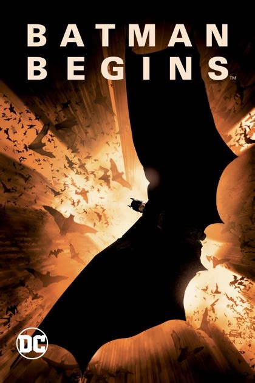
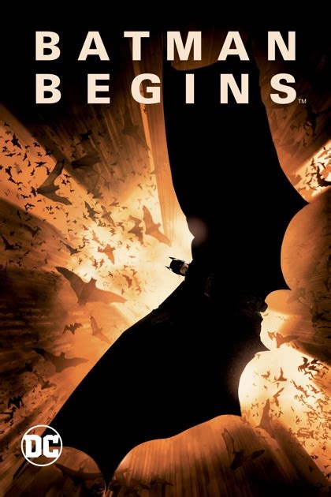
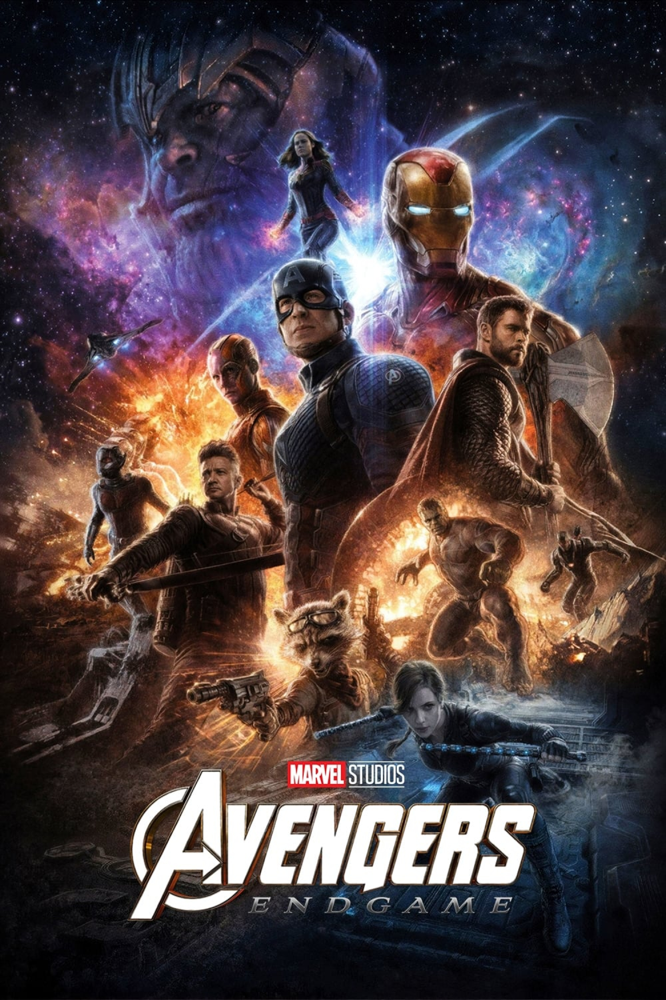
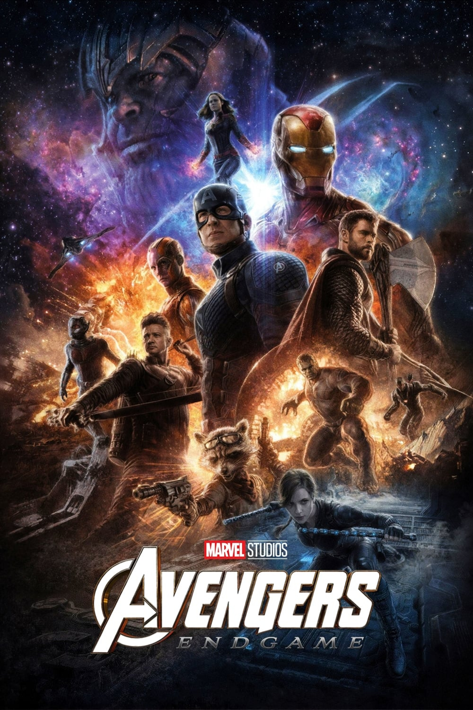

Top 10 Super-Hero Movies Ranked
1. Spider-Man 2 (2004)

Key Actors:
Tobey Maguire, Kirsten Dunst, James Franco and Alfred Molina
Director:
Sam Raimi
Movie Length:
2h 07m
Spider-Man 2 is great. It has my favorite scene out of any superhero movie ever. Spider-Man chases the villain Doc-Oc while trying to stop a train. Spider-man heroically sacrifices all his energy and strength to stop the train then passes out. The passengers of the train catch him before he falls. The scene becomes iconic when the passengers lift Spider-Man above them passing him to the next passenger and so forth down the train. I love this movie because of the complex relationship between Mary Jane and Peter Parker. Peter Parker doesn't want to be spider-man so he can spend time with Mary Jane. It highlights a real personal conflict in Peter Parker's life. Peter Parker eventually sacrifices his personal life to become Spider-Man.
2. Spider-Man: No Way Home (2021)

Key Actors:
Tom Holland, Jamie Fox, Andrew Garfield, Thomas Haden Church, Zendaya, Tobey Maguire and Willem Dufoe
Director:
Jon Watts
Movie Length:
2h 28m
This movie did everything I have ever wanted and didn't disappoint. I love spider-man and would have dreamed to see three different spider-man sharing the screen. A couple of my favorite villains the Green Goblin and Doc Oc returned. There is a risk of overwhelming the audience with too many heroes and villains. We can look at Spider-Man 3 and Spider-Man 2 to learn that lesson. However, this movie balances so many characters perfectly. I loved the intercourse between the three Spider-Man which caused a lot of funny scenes.
3. Spider-Man 1 (2002)
Key Actors:
Tobey Maguire, Kirsten Dunst, James Franco and Willem Dafoe
Director:
Sam Raimi
Movie Length:
2h 01m
This is number 3 on my list because it is the best origin story of Spider-Man. Sam Raimi makes Peter Parker is a very relatable teenager. Peter Parker is shown as a quiet dork who is too shy to ask out Mary Jane. I love Willem Dafoe as the Green Goblin. I have realized a lot of the great superhero movies aren't defined by the superhero but the villain and this is a great example of that. I loved how there was a conflict in th Green Goblin's character.
4.
5.
6.
7.
8.

9.
10.

 



 
